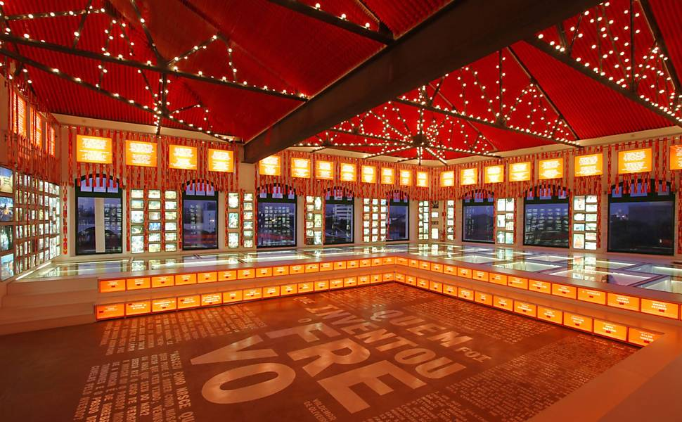
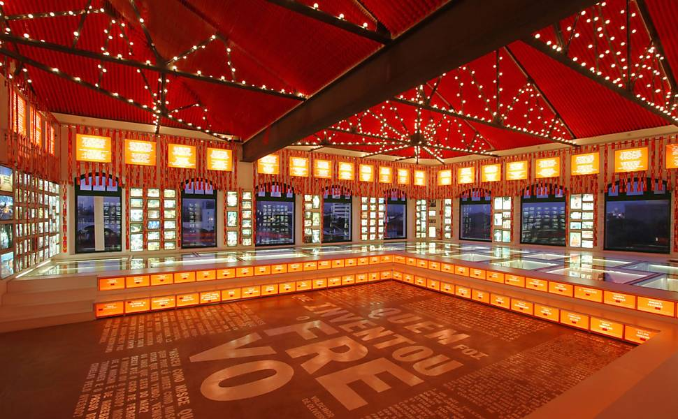

1. Paço do Frevo
 
O Paço do Frevo é um local culturalmente significativo situado no coração do Recife Antigo, uma área histórica e vibrante da cidade do Recife, em Pernambuco, Brasil. Este museu e centro cultural tem como principal objetivo celebrar e preservar uma das manifestações culturais mais icônicas da região nordestina: o frevo.
O frevo é muito mais do que apenas uma dança ou um gênero musical. É uma manifestação artística profundamente enraizada na cultura pernambucana e uma verdadeira expressão de alegria, energia e criatividade. O Paço do Frevo foi inaugurado em 2014 como um espaço dedicado exclusivamente ao frevo, tornando-se uma referência para entender e apreciar essa forma de arte única.
O edifício que abriga o Paço do Frevo é uma obra de arquitetura contemporânea que reflete a vivacidade do frevo. No interior, os visitantes são imersos em uma experiência cultural rica e interativa. O museu oferece exposições permanentes e temporárias que contam a história do frevo, desde suas origens até sua evolução ao longo dos anos. Os visitantes podem explorar a influência do frevo na música, na dança, no carnaval e na cultura de Pernambuco.
2. Rua do Bom Jesus

A Rua do Bom Jesus é uma das vias mais emblemáticas e históricas do Recife Antigo, uma área central e rica em cultura da cidade de Recife, em Pernambuco, Brasil. Com mais de 300 anos de história, a rua é um testemunho vivo da evolução da cidade e abriga uma variedade de atrações que a tornam um destino obrigatório para visitantes e moradores locais.
Originalmente conhecida como Rua dos Judeus, a Rua do Bom Jesus possui um legado único e notável. Ela recebeu esse nome devido à presença da comunidade judaica que se estabeleceu no Recife durante o período colonial. Hoje em dia, essa herança judaica é preservada no Centro Cultural Judaico de Pernambuco, localizado na própria rua. Este centro cultural é um espaço dedicado à história e cultura judaica no Brasil e abriga uma sinagoga histórica que representa um importante marco da presença judaica no Recife.
A rua também é conhecida por sua arquitetura encantadora. Os edifícios preservam a estética colonial, com suas fachadas coloridas e varandas de ferro forjado, criando um cenário pitoresco e convidativo. Durante o Carnaval, a Rua do Bom Jesus se transforma em um ponto de encontro para os foliões que participam da festa, com desfiles de agremiações culturais, bandas e artistas locais.